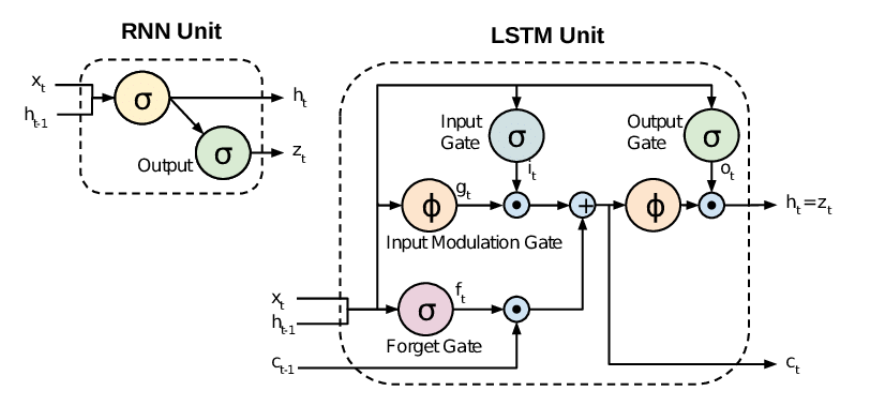

2018年4月17日，YouTube上橫空出世一段美國前總統歐巴馬之談話影片，該影片名為：「You Won’t Believe What Obama Says In This Video! 」，在影片背景中可以看到美國國旗與歐巴馬發表演講，用下流的言語攻擊美國前任總統川普。此段影片實際是由Jordan Peele錄製之偽造影片，該影片結尾顯示，歐巴馬總統之影像會隨著Peele的嘴型進行改變，而這樣的技術就是AI換臉，英文又稱Deep Fake。
我們之所以會想進行這項技術的研究也是有鑒於台灣知名Youtuber小玉販售透過DeepFake技術製作換臉網紅與素人的色情影片，於是延伸出想了解如何分辨進行過DeepFake製作出的影片與真實影片。
近年各大網路企業如Microsoft、Google等都透過研發軟體辨別Deepfake,甚至出現了專門研發辨別換臉照片、影片的公司。他們大多透過AI辨別真人和換臉照片的些微不同，如嘴和眼部動作、細部陰影、語音和嘴唇是否同步、人聲的機械感等等。
為了增強性能，AI會以“深度學習(Deep Learning)分析大數據中的對錯範本，歸納出真人和換臉照片的主要差異，有些開發者將辨別者AI和換臉AI同步運作，進而測試和加強AI在短時間內分析的能力。 而辨別影片需要更多的性能和效率，於是開發者把影片需要分析的部分如動作、光源、音訊等拆分，並以不同的演算法構成不同的模型(Models)和分析法(Analysis)，對分散的部分進行專門運算。 例如，以CNN,RNN和LSTM等演算法構成的影音檢測模型(Video Detection Model)，其中的生物單一分析(Biological Singles Analysis)能以眨眼這種非常細部的差異分辨換臉影片，而時空間分析(Spatial and Temporal Features Analysis)則可以以多幀為單位分析增加效率。 近年發展出的模型越來越多，而在大量模型的疊加下，分辨換臉的技術也愈趨完善。
技術基於深度卷積神經網絡，能夠分析像素、表情及音頻，以檢測Deepfake的真偽 Sentinel利用生成對抗網絡來辨別偽造內容，以這兩種人工神經網絡來檢測Deepfake操控，讓應用範圍加廣泛，更被設計為幫助政府和媒體抵制虛假內容 Sentinel內涵有別於Microsoft僅用檢測圖片的方法，能層層過濾可疑的資訊，並依權重評估，提升準確性
此軟體在播放影片時提供真偽的百分比及置信度分數，以顯示影像真實性的程度。其運作原理為藉由檢測DeepFake不一致的邊界及通常人眼無法檢測到的細微顏色變化來運作 為了訓練Microsoft Video Authenticator，微軟運用Face Forensic++的公共數據集，然後在DeepFake Detection Challenge Dataset上進行測試。儘管研究小組並未透露其成功率的具體數字，但他們仍將繼續改進偽造媒體檢測技術，並且微軟提供此軟體給參與美國選舉過程的組織，以解決Deepfake的問題。
隨著Deep Fake技術的不斷演進，辨識軟體也將不斷升級，以提升對抗偽造內容的能力，而我們也需要從科技及其他層面來面對這個問題。
1.深度學習技術的進步： 隨著深度學習技術的不斷發展，辨別真偽軟體的能力可能會不斷提高。更複雜的神經網絡和算法可能更有效地檢測圖像或文本的真實性和語音及文字的真實性。
2.加入區塊鏈技術的應用：區塊鏈技術可用於確保數據的不可修改性，從而提高內容的真實性。此項技術可應用於數字媒體的驗證和溯源。
3.法規和政策： 隨著Deep Fake 的應用不斷擴大，未來必須有更多的法規和政策制定，要求在特定情境下使用辨識技術，以防範濫用和不當使用。
4.社會教育： 除了技術手段，社會教育也將發揮關鍵作用。提高公眾對Deep Fake的認識，使人們更具警覺性。 由於Deep Fake問題跨足技術、法律和道德等多個領域，未來可能會看到更多的跨業合作，包括政府、科技公司和研究機構等，以應對這一挑戰。
Deepfake 技術的崛起引發了對社會、個人和訊息可信性的新挑戰。本報告探討了這一技術的發展、應對方法以及相關的技術發展趨勢。我們深入了解了 Deepfake 技術的複雜性和可能的影響，這技術帶來的挑戰包括社會風險、人權問題和個人隱私威脅。
為了應對這一挑戰，科技公司使用多種方法，如生物單一分析和深度學習，提高辨識的準確性。然而，濫用風險依然存在，需要跨界合作，包括政府、企業和公眾參與。 我們必須平衡技術發展和社會需要，確保應用不會造成傷害。
同時，提高公眾對Deepfake技術的認識和理解是重要的，透過教育實現。總而言之，開發者、政府和大眾的共同努力是確保科技發展符合社會價值和道德標準的關鍵。